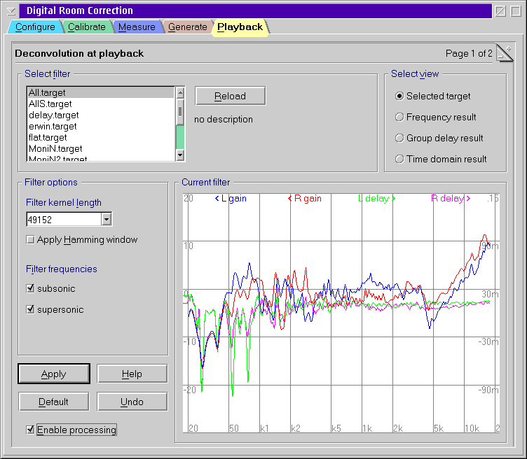

Deconvolution at playback

Steps to activate the digital room correction
- Select one of the target responses you have created
before.
- Press Apply.
- Check Enable processing if not yet done.
Because any change requires a new calculation of the filter kernel and
this causes significant CPU cycles you have to press Apply always
after you finished changes.
Filter options
- Filter kernel length
- This parameter controls computing time versus accuracy. Larger values
are more accurate but also introduce more latency. The required length
depends on your room. Rule of thumb: the more reverb the longer the
kernel. In most cases the default value of 49152 should be suitable.
The selected value is used for playback at 32, 44.4 and 48 kHz sampling
rate. For 16, 22.05 and 24 kHz only half of the selected size is used.
And in case of 96 kHz the size is doubled, well if you managed to get a
24/96 sound device working with OS/2.
- Apply Hamming window
- Optionally a Hamming window function can be applied to the filter
kernel to reduce artifacts especially at low frequencies. This
effectively causes further smoothing to the target response. You may
show the difference by using another view mode (see below).
In general it is a better advice to use reasonably smooth target
responses instead of a window function. That gives you more control
about the result.
- Filter frequencies
- The two check boxes control whether frequencies below (subsonic) and
above (supersonic) the domain of definition of the target response are
rejected. I.e. if your selected target covers the range of [20 Hz, 20
kHz] and you enabled both boxes then frequencies below 20 Hz are damped
by 3 dB per inverse filter kernel length (e.g, 0.9 Hz for 49152 kernel
at 44.1 kHz) and frequencies above 20 kHz are damped by .1 dB per
inverse kernel length.
While high end freaks usually dislike discarding supersonic frequencies
it could protect your tweeters from unwanted inaudible noise. In fact
you won't notice any difference in A/B blind test. It on you whether you
favor it. But you should keep the subsonic filter active. It
usually improves sound reproduction because it reduces movement of yous
bass bins at very low frequencies which causes heavy intermodulation
artifacts.
View mode
Besides the default view of the selected target response there are three
further view modes available while a playback is active. They
are intended for advanced users to control what actually is going on
during playback. In the frequency and group delay view you can
compare the effect of the currently applied filter at the sampling rat of
the current son with the selected target response. Usually there should be
only small differences at low frequencies. Otherwise you should chose a
larger filter kernel.
The time domain view shows the real values of the applied filter
kernel in the time domain. It should return close to zero at both ends.
The dimensions of the graphs can be controlled by the extended
playback options page.